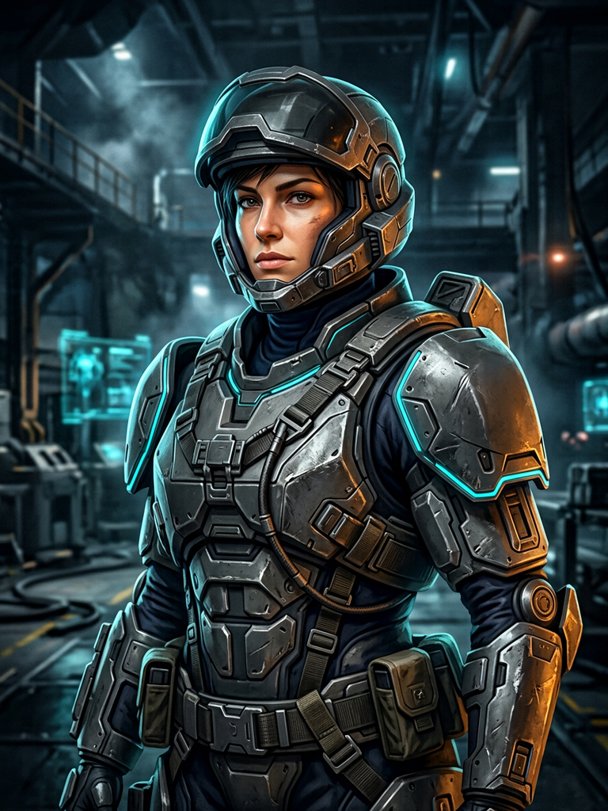

Tak ada garis di belakangmu
Menyiapkan konsol
Peta operasi
Pilih teater
Frostline Relay · uplink
Gelombang pertama dimulai di dalam arena

Operatif lapangan
EXO Operative
Chassis E-07 · livery AEGIS. Satu rangka untuk semua operatif; yang berbeda corak lapangannya, bukan statistiknya.
ChassisE-07
Tinggi rig1.78 m
Slot01 / 03
- 01 siap
- 02 kosong
- 03 kosong
Rak senjata
BP dibelanjakan di dalam arenaDua senjata terakhir dibuka dengan Battle Points di arena. Pilihan di sini adalah yang terbawa saat Deploy.
Tampilan & kontrol
Kontrol
BergerakW A S D
BidikKlik kanan
TembakKlik kiri
Ganti senjataE
EMPQ
PertahananB
PauseEsc
Deploy · Neon Frontier
Menyiapkan dunia
Memuat aset dunia
—Tetap di layar ini sampai dunia siap.